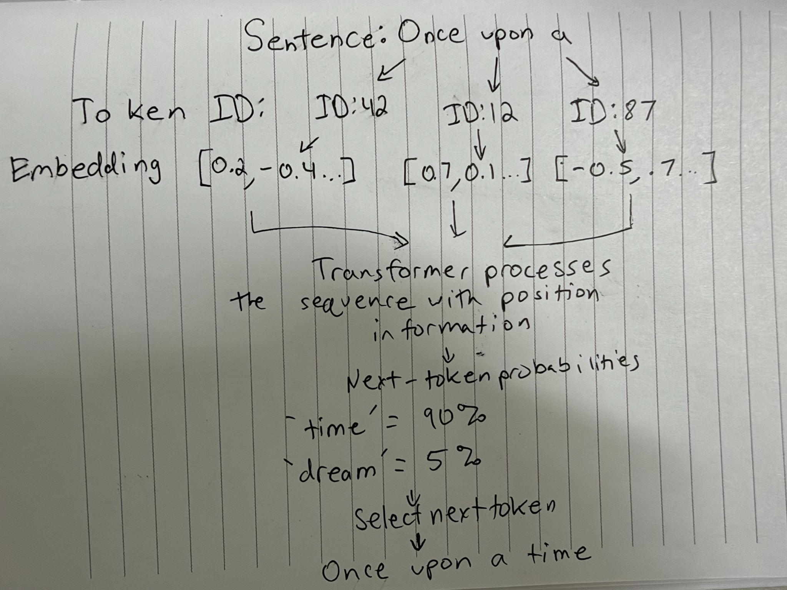
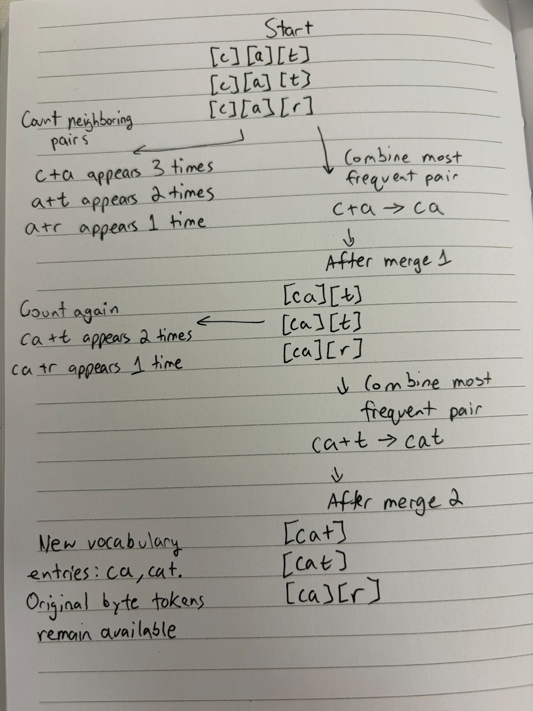

Extending Google’s Coral NPU RV32 core, RVV engine, and MAC array to stream a 28M-parameter language model trained on TinyStories through 40 KB of SRAM.
You can find the code for this project in Bevotron, including the BPE tokenizer implementation and its tests.
We are building an efficient transformer language model for Reef, Longhorn Silicon’s first chip, which extends Google’s Coral NPU. Its sole task is to generate children’s stories. Rather than supporting a general model, we can tailor the hardware and model to this specific workload.
We train our model on TinyStories, a dataset of simple children’s stories. This gives us training text that matches what we want the chip to generate.
Our challenge is to generate coherent stories within Reef’s limited memory and data bandwidth. This means two things for the model: 1) Reduce cost. 2) Preserve story quality.
How the model generates text
A token is a piece of text, such as a word, part of a word, or punctuation. A tokenizer splits text into these pieces and assigns each one an integer ID.
The task is next-token prediction. Given some text, predict the token that follows.
Here is the simple flow. Text becomes token IDs. Each ID selects an embedding (a list of learned numbers representing a token). The transformer processes those embeddings and predicts probabilities for the next token.


For example, given:
Once upon a ___
the model might assign a high probability to “time.” During training, we show it the actual word and adjust its parameters so its predictions improve. The tokenizer defines the pieces and their IDs. Model training learns how to represent and predict those pieces.
The tokenizer
There are 3 main ways to tokenize text (word-level, character-level, and subword tokenization). We will proceed with the most common, subword-level tokenization. (One word per token and one character per tokenization are inefficient; see 17:05.) Many modern models use a BPE tokenizer.


With our tokenizer, we turn the TinyStories text into token IDs. We then choose a starting model design and train it to predict the next token. This becomes our baseline, and we compare other versions to see whether our changes help.
A larger vocabulary gives the model more text pieces to choose from, but it must store a list of learned numbers for every piece. A larger vocabulary therefore requires more memory. A smaller vocabulary saves memory, but may split the same story into more tokens. We want to find how much we can shrink the vocabulary while maintaining prediction quality.
But a working model is not automatically an efficient model for Reef. We still need to decide how large the vocabulary should be (vocabulary size ablations), how much computation the transformer should require (architecture ablations), and which numerical precisions it can tolerate (quantization ablations). Each choice has consequences.
Smaller vocabularies shrink the token table but can require more tokens per story. Fewer bits per value (INT4 instead of INT8) can reduce storage but can hurt predictions.
We use ablation studies to measure these tradeoffs. An ablation study helps us understand what happens when we change one variable or design choice. We start with a baseline model, change one variable, and keep the others fixed. (Change more, and there’s too much uncertainty. For our initial comparisons, we change one variable at a time.)
That leads to:
- Compare six tokenizer candidates using the same reference transformer.
- Select a tokenizer based on prediction quality and memory use.
- Keep that tokenizer fixed while studying other variables separately.
Without that separation, testing all (X) model configurations with all six tokenizers would take (6X) runs. Selecting the tokenizer first reduces that to approximately (6+X) runs.
Choosing our BPE vocabulary size
All our candidates use BPE. We compare vocabularies containing 50,000, 25,000, 16,000, 12,000, 8,000, and 4,000 entries. Each entry represents a piece of text, such as a word or part of a word.
For each vocabulary, we train a model from the beginning using the same model design and training text. We repeat training because the model needs to learn the particular text pieces defined by its tokenizer.
For example, the 50k tokenizer might represent “elephant” as one token, while the 4k tokenizer might split it into several pieces. Each model must learn to predict the pieces its tokenizer uses.
After training, we test each model on text it did not train on. We measure how well it predicts that text and how much memory it needs.
To measure prediction quality, we check how much probability the model assigned to each actual next token. Assigning it a high probability earns a small penalty while assigning it a low probability earns a large penalty. We add these penalties, measured in bits, and divide by the number of bytes in the evaluated text. This gives us bits per byte, or BPB. Using bytes lets us compare different tokenizers fairly. Lower is better.
Results
| Vocabulary | BPB ↓ | Est. memory | Total parameters |
|---|---|---|---|
| 50k | 0.4828 | 56.0 MB | 51.0M |
| 25k | 0.4831 | 43.2 MB | 38.2M |
| 16k BEST BPB | 0.4822 | 38.6 MB | 33.6M |
| 12k | 0.4841 | 36.6 MB | 31.6M |
| 8k | 0.4858 | 34.5 MB | 29.5M |
| 4k | 0.4918 | 32.5 MB | 27.5M |
VOCABULARY SIZE
Our results show that a large vocabulary was not necessary to maintain similar prediction quality on TinyStories. Reducing the vocabulary from 50k to 16k lowered estimated memory use from 56.0 MB to 38.6 MB, saving 17.4 MB (31%), while achieving a slightly better prediction score in this experiment.
Reducing it to 4k lowered estimated memory use to 32.5 MB, saving 23.5 MB (42%) compared with 50k, but increased bits per byte from 0.4828 to 0.4918, a small decline in prediction quality (Remember: lower bits per byte means the model is less surprised by the actual next tokens, meaning we have better predictions).